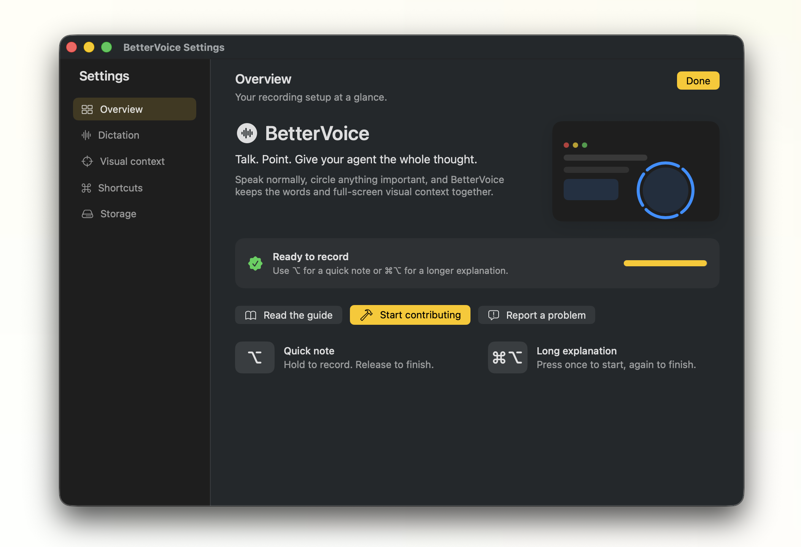

Speak naturally
Hold Option for a quick note. Use Command–Option for more.
Local macOS dictation
BetterVoice gives your agent the words and screen context together.
Apple Silicon · macOS 14+ · local transcription

The useful part
Point at the part of the screen your agent needs to see.
Hold Option for a quick note. Use Command–Option for more.
Circle a button, error, or layout. The full display comes with it.
Transcript first. Images next. Everything goes to the field you were using.
Built for real workflows
Speech runs locally. Temporary audio is deleted. Captured sessions stay on your Mac and expire automatically.
Read the privacy and storage detailsThree small moves
Choose the shortcut that fits.
Mark the pieces that matter.
Send the complete context.
Try the experiment
Download the Apple Silicon build and try it in your next agent session.